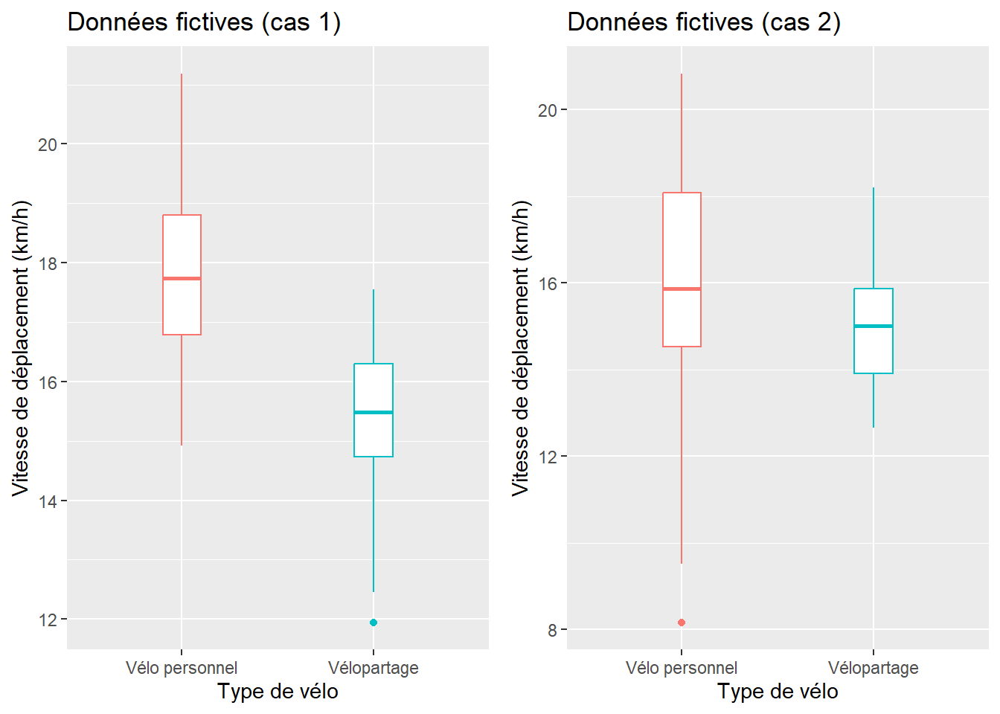

6Relation entre une variable qualitative et une variable quantitative
Dans le cadre de ce chapitre, nous présentons les principales méthodes permettant d’explorer les associations entre une variable quantitative et une variable qualitative avec deux modalités (tests de Student, de Welch et de Wilcoxon) ou avec plus de deux modalités (ANOVA et test de Kruskal-Wallis).
Liste des packages utilisés dans ce chapitre
Pour créer des graphiques :
ggplot2, le seul, l’unique!
ggpubr pour combiner des graphiques.
Pour manipuler des données :
dplyr, avec les fonctions group_by, summarize et les pipes %>%.
Pour les test t :
sjstats pour réaliser des tests t pondérés.
effectsize pour calculer les tailles d’effet de tests t.
Pour la section sur les ANOVA :
car pour les ANOVA classiques.
lmtest pour le test de Breusch-Pagan d’homogénéité des variances.
rstatix intégrant de nombreux tests classiques (comme le test de Shapiro) avec tidyverse.
Autre package :
foreign pour importer des fichiers externes.
6.1 Relation entre une variable quantitative et une variable qualitative à deux modalités
Les moyennes de deux groupes de population sont-elles significativement différentes?
Nous souhaitons ici comparer deux groupes de population en fonction d’une variable continue. Par exemple, pour deux échantillons respectivement d’hommes et de femmes travaillant dans le même secteur d’activité, nous pourrions souhaiter vérifier si les moyennes des salaires des hommes et des femmes sont différentes et ainsi vérifier la présence ou l’absence d’une iniquité systématique. En études urbaines, dans le cadre d’une étude sur un espace public, nous pourrions vouloir vérifier si la différence des moyennes du sentiment de sécurité des femmes et des hommes est significative (c’est-à-dire différente de 0).
Pour un même groupe, la moyenne de la différence d’un phénomène donné mesuré à deux moments est-elle ou non égale à zéro?
Autrement dit, nous cherchons à comparer un même groupe d’individus avant et après une expérimentation ou dans deux contextes différents. Prenons un exemple d’application en études urbaines. Dans le cadre d’une étude sur la perception des risques associés à la pratique du vélo en ville, 50 personnes utilisant habituellement l’automobile pour se rendre au travail sont recrutées. L’expérimentation pourrait consister à leur donner une formation sur la pratique du vélo en ville et à les accompagner quelques jours durant leurs déplacements domicile-travail. Nous évaluerons la différence de leurs perceptions des risques associés à la pratique du vélo sur une échelle de 0 à 100 avant et après l’expérimentation. Nous pourrions supposer que la moyenne des différences est significativement négative, ce qui indiquerait que la perception du risque a diminué après l’expérimentation; autrement dit, la perception du risque serait plus faible en fin de période.
6.1.1 Test t et ses différentes variantes
Le t de Student, appelé aussi test t (t-test en anglais), est un test paramétrique permettant de comparer les moyennes de deux groupes (échantillons), qui peuvent être indépendantes ou non :
Échantillons indépendants (dits non appariés) : les observations de deux groupes qui n’ont aucun lien entre eux. Par exemple, nous souhaitons vérifier si les moyennes du sentiment de sécurité des hommes et des femmes, ou encore si, les moyennes des loyers entre deux villes sont statistiquement différentes. Ainsi, les tailles des deux échantillons peuvent être différentes (\(n_a \neq n_b\)).
Échantillons dépendants (dits appariés) : les individus des deux groupes sont les mêmes et sont donc associés par paires. Autrement dit, nous avons deux séries de valeurs de taille identique \(n_a = n_b\) et \(n_{ai}\) est le même individu que \(n_{bi}\). Ce type d’analyse est souvent utilisée en études cliniques : pour \(n\) individus, nous disposons d’une mesure quantitative de leur état de santé pour deux séries (l’une avant le traitement, l’autre une fois le traitement terminé). Cela permet de comparer les mêmes individus avant et après un traitement; nous parlons alors d’étude, d’expérience ou d’analyse pré-post. Concrètement, nous cherchons à savoir si la moyenne des différences des observations avant et après est significativement différente de 0. Si c’est le cas, nous pouvons conclure que l’expérimentation a eu un impact sur le phénomène mesuré (variable continue). Ce type d’analyse pré-post peut aussi être utilisé pour évaluer l’impact du réaménagement d’un espace public (rue commerciale, place publique, parc, etc.). Par exemple, nous pourrions questionner le même échantillon de commerçant(e)s ou personnes l’utilisant avant et après le réaménagement d’une artère commerciale.
Condition d’application. Pour utiliser les tests de Student et de Welch, la variable continue doit être normalement distribuée. Si elle est fortement anormale, nous utiliserons le test non paramétrique de Wilcoxon (section 6.1.2). Il existe trois principaux tests pour comparer les moyennes de deux groupes :
Test de Student (test t) avec échantillons indépendants et variances similaires (méthode pooled). Les variances de deux groupes sont semblables quand leur ratio varie de 0,5 à 2, soit \(\mbox{0,5}< (S^2_{X_A}/S^2_{X_B})<\mbox{2}\).
Test de Welch (appelé aussi Satterthwaite) avec échantillons indépendants quand les variances des deux groupes sont dissemblables.
Test de Student (test t) avec échantillons dépendants.
Il s’agit de vérifier si les moyennes des deux groupes sont statistiquement différentes avec les étapes suivantes :
Nous posons l’hypothèse nulle (H0), soit que les moyennes des deux groupes A et B ne sont pas différentes (\(\bar{X}_{A}=\bar{X}_{B}\)) ou, autrement dit, la différence des deux moyennes est nulle (\(\bar{X}_{A}-\bar{X}_{B}=0\)). L’hypothèse alternative (H1) est donc \(\bar{X}_{A}\ne\bar{X}_{B}\).
Nous calculons la valeur de t et le nombre de degrés de liberté. La valeur de t est négative quand la moyenne du groupe A est inférieure au groupe B et inversement.
Nous comparons la valeur absolue de t (\(\mbox{|t|}\)) avec celle issue de la table des valeurs critiques de T (section 13.2) avec le bon nombre de degrés de liberté et en choisissant un degré de signification (habituellement, p = 0,05). Si \(\mbox{|t|}\) est supérieure à la valeur t critique, alors les moyennes sont statistiquement différentes au degré de signification retenu.
Si les moyennes sont statistiquement différentes, nous pouvons calculer la taille de l’effet.
Cas 1. Test de Student pour des échantillons indépendants avec des variances similaires (méthode pooled). La valeur de t est le ratio entre la différence des moyennes des deux groupes (numérateur) et l’erreur type groupée des deux échantillons (dénominateur) :
\[
t = \frac{\bar{X}_{A}-\bar{X}_{B}}{\sqrt{\frac{S^2_p}{n_A}+\frac{S^2_p}{n_B}}}\mbox{ avec } S^2_p = \frac{(n_A-1)S^2_{X_A}+(n_B-1)S^2_{X_B}}{n_A+n_B-2}
\tag{6.1}\]
avec \(n_A\),\(n_B\), \(S^2_{X_A}\) et \(S^2_{X_B}\) étant respectivement les nombres d’observations et les variances pour les groupes A et B, \(S^2_p\) étant la variance groupée des deux échantillons et \(n_A+n_B-2\) étant le nombre de degrés de liberté.
Cas 2. Test de Welch pour des échantillons indépendants (avec variances dissemblables). Le test de Welch est très similaire au test de Student; seul le calcul de la valeur de t est différent, pour tenir compte des variances respectives des groupes :
\[
t = \frac{\bar{X}_{A}-\bar{X}_{B}}{\sqrt{\frac{S^2_{X_A}}{n_A}+\frac{S^2_{X_B}}{n_B}}} \mbox{ et } dl = \frac{ \left( \frac{S^2_{X_A}}{n_A}+\frac{S^2_{X_B}}{n_B} \right)^2} {\frac{S^4_{X_A}}{n^2_A(n_A-1)}+\frac{S^4_{X_B}}{n^2_B(n_B-1)}}
\tag{6.2}\]
Dans la syntaxe ci-dessous, nous avons écrit une fonction dénommée test_independants permettant de calculer les deux tests pour des échantillons indépendants. Dans cette fonction, vous pouvez repérer comment sont calculés les moyennes, les nombres d’observations et les variances pour les deux groupes, le nombre de degrés de liberté et les valeurs de t et de p pour les deux tests. Puis, nous avons créé aléatoirement deux jeux de données relativement à la vitesse de déplacement de cyclistes utilisant un vélo personnel ou un vélo en libre-service (généralement plus lourd) :
Au cas 1, 60 cyclistes utilisant un vélo personnel roulant en moyenne à 18 km/h (écart-type de 1,5) et 50 autres utilisant un système de vélopartage avec une vitesse moyenne de 15 km/h (écart-type de 1,5).
Au cas 2, 60 cyclistes utilisant un vélo personnel roulant en moyenne à 16 km/h (écart-type de 3) et 50 autres utilisant un système de vélopartage avec une vitesse moyenne de 15 km/h (écart-type de 1,5). Ce faible écart des moyennes, combiné à une plus forte variance réduit la significativité de la différence entre les deux groupes.
D’emblée, l’analyse visuelle des boîtes à moustaches (figure 6.1) signale qu’au cas 1, contrairement au cas 2, les groupes sont plus homogènes (boîtes plus compactes) et les moyennes semblent différentes (les boîtes sont centrées différemment sur l’axe des ordonnées). Cela est confirmé par les résultats des tests.
library("ggplot2")library("ggpubr")# fonction ------------------tstudent_independants<-function(A, B){x_a<-mean(A)# Moyenne du groupe Ax_b<-mean(B)# Moyenne du groupe Bvar_a<-var(A)# Variance du groupe Avar_b<-var(B)# Variance du groupe Bsd_a<-sqrt(var_a)# Écart-type du groupe Asd_b<-sqrt(var_b)# Écart-type du groupe Bratio_v<-var_a/var_b# ratio des variancesn_a<-length(A)# nombre d'observation du groupe An_b<-length(B)# nombre d'observation du groupe B# T-test (variances égales)dl_test<-n_a+n_b-2# degrés de libertéPooledVar<-(((n_a-1)*var_a)+((n_b-1)*var_b))/dl_testt_test<-(x_a-x_b)/sqrt(((PooledVar/n_a)+(PooledVar/n_b)))p_test<-2*(1-(pt(abs(t_test), dl_test)))# Test Welch-Sattherwaite (variances inégales)t_welch<-(x_a-x_b)/sqrt((var_a/n_a)+(var_b/n_b))dl_num=((var_a/n_a)+(var_b/n_b))^2dl_dem=((var_a/n_a)^2/(n_a-1))+((var_b/n_b)^2/(n_b-1))dl_welch=dl_num/dl_dem# degrés de libertép_welch<-2*(1-(pt(abs(t_welch), dl_welch)))cat("\n groupe A (n = ", n_a,"), moy = ", round(x_a,1),", variance = ", round(var_a,1),", écart-type = ", round(sd_a,1),"\n groupe B (n = ", n_b,"), moy = ", round(x_b,1),", variance = ", round(var_b,1),", écart-type = ", round(sd_b,1),"\n ratio variance = ", round(ratio_v,2),"\n t-test (variances égales): t(dl = ", dl_test, ") = ", round(t_test,4),", p = ", round(p_test,6),"\n t-Welch (variances inégales): t(dl = ", round(dl_welch,3), ") = ",round(t_welch,4), ", p = ", round(p_welch,6), sep ="")if(ratio_v>0.5&&ratio_v<2){cat("\n Variances semblables. Utilisez le test de Student!")p<-p_test}else{cat("\n Variances dissemblables. Utilisez le test de Welch-Satterwaithe!")p<-p_welch}if(p<=.05){cat("\n Les moyennes des deux groupes sont significativement différentes.")}else{cat("\n Les moyennes des deux groupes ne sont pas significativement différentes.")}}# CAS 1 : données fictives ------------------# Création du groupe A : 60 observations avec une vitesse moyenne de 18 et un écart-type de 1,5Velo1A<-rnorm(60,18,1.5)# Création du groupe B : 50 observations avec une vitesse moyenne de 15 et un écart-type de 1,5Velo1B<-rnorm(50,15,1.5)df1<-data.frame( vitesse =c(Velo1A,Velo1B), type =c(rep("Vélo personnel", length(Velo1A)), rep("Vélopartage", length(Velo1B))))boxplot1<-ggplot(data =df1, mapping=aes(x =type, y =vitesse, colour =type))+geom_boxplot(width=0.2)+ggtitle("Données fictives (cas 1)")+xlab("Type de vélo")+ylab("Vitesse de déplacement (km/h)")+theme(legend.position ="none")# CAS 2 : données fictives ------------------# Création du groupe A : 60 observations avec une vitesse moyenne de 18 et un écart-type de 3Velo2A<-rnorm(60,16,3)# Création du groupe B : 50 observations avec une vitesse moyenne de 15 et un écart-type de 1,5Velo2B<-rnorm(50,15,1.5)df2<-data.frame( vitesse =c(Velo2A,Velo2B), type =c(rep("Vélo personnel", length(Velo2A)), rep("Vélopartage", length(Velo2B))))boxplot2<-ggplot(data =df2, mapping=aes(x =type, y =vitesse, colour =type))+geom_boxplot(width=0.2)+ggtitle("Données fictives (cas 2)")+xlab("Type de vélo")+ylab("Vitesse de déplacement (km/h)")+theme(legend.position ="none")ggarrange(boxplot1, boxplot2, ncol =2, nrow =1)# Appel de la fonction pour le cas 1tstudent_independants(Velo1A, Velo1B)
groupe A (n = 60), moy = 17.9,
variance = 2.7, écart-type = 1.7
groupe B (n = 50), moy = 15.1,
variance = 2.5, écart-type = 1.6
ratio variance = 1.08
t-test (variances égales): t(dl = 108) = 8.9846, p = 0
t-Welch (variances inégales): t(dl = 105.744) = 9.0162, p = 0
Variances semblables. Utilisez le test de Student!
Les moyennes des deux groupes sont significativement différentes.
# Appel de la fonction pour le cas 2tstudent_independants(Velo2A, Velo2B)
groupe A (n = 60), moy = 16.2,
variance = 5.3, écart-type = 2.3
groupe B (n = 50), moy = 15.2,
variance = 2.3, écart-type = 1.5
ratio variance = 2.3
t-test (variances égales): t(dl = 108) = 2.5702, p = 0.011527
t-Welch (variances inégales): t(dl = 102.859) = 2.665, p = 0.008941
Variances dissemblables. Utilisez le test de Welch-Satterwaithe!
Les moyennes des deux groupes sont significativement différentes.

Figure 6.1: Boîtes à moustaches sur des échantillons fictifs non appariés
6.1.1.1 Principe de base et formulation pour des échantillons dépendants (appariés)
Nous disposons de plusieurs personnes pour lesquelles nous avons mesuré un phénomène (variable continue) à deux temps différents : généralement avant et après une expérimentation (analyse pré-post). Il s’agit de vérifier si la moyenne des différences des observations avant et après la période est différente de 0. Pour ce faire, nous réalisons les étapes suivantes :
Nous posons l’hypothèse nulle (H0), soit que la moyenne des différences entre les deux séries est égale à 0 (\(\bar{D} = 0\) avec \(d = {x}_{t_1}- {x}_{t_2}\)). L’hypothèse alternative (H1) est donc \(\bar{D} \ne 0\). Notez que nous pouvons tester une autre valeur que 0.
Nous calculons la valeur de t et le nombre de degrés de liberté. La valeur de t est négative quand la moyenne des différences entre \({X}_{t_1}\) et \({X}_{t_2}\) est négative et inversement.
Nous comparons la valeur absolue de t (\(\mbox{|t|}\)) avec celle issue de la table des valeurs critiques de T avec le nombre de degrés de liberté et en choisissant un degré de signification (habituellement, p = 0,05). Si \(\mbox{|t|}\) est supérieure à la valeur t critique, alors les moyennes sont statistiquement différentes au degré de signification retenu.
Pour le test de Student avec des échantillons appariés, la valeur de t se calcule comme suit :
\[
t = \frac{\bar{D}-\mu_0}{\sigma_D / \sqrt{n}}
\tag{6.3}\]
avec \(\bar{D}\) étant la moyenne des différences entre les observations appariées de la série A et de la série B, \(\sigma_D\) l’écart des différences, n le nombre d’observations, et finalement \(\mu_0\) la valeur de l’hypothèse nulle que nous voulons tester (habituellement 0). Bien entendu, il est possible de fixer une autre valeur pour \(\mu_0\) : par exemple, avec \(\mu_0 = 10\), nous chercherions ainsi à vérifier si la moyenne des différences est significativement différente de 10. Le nombre de degrés de liberté est égal à \(n-1\).
Dans la syntaxe ci-dessous, nous avons écrit une fonction dénommée tstudent_dependants permettant de réaliser le test de Student pour des échantillons appariés. Dans cette fonction, vous pouvez repérer comment sont calculés la différence entre les observations pairées, la moyenne et l’écart-type de cette différence, puis le nombre de degrés de liberté, les valeurs de t et de p pour les deux tests.
Pour illustrer l’utilisation de la fonction, nous avons créé aléatoirement deux jeux de données. Imaginons que ces données décrivent 50 personnes utilisant habituellement l’automobile pour se rendre au travail. Pour ces personnes, nous avons généré des valeurs du risque perçu de l’utilisation du vélo (de 0 à 100), et ce, avant et après une période de 20 jours ouvrables durant lesquels elles devaient impérativement se rendre au travail à vélo.
Au cas 1, les valeurs de risque ont une moyenne de 70 avant l’expérimentation et de 50 après l’expérimentation, avec des écarts-types de 5.
Au cas 2, les valeurs de risque ont une moyenne de 70 avant et de 66 après, avec des écarts-types de 5.
D’emblée, l’analyse visuelle des boîtes à moustaches (figure 6.2) pairées montre que la perception du risque semble avoir nettement diminué après l’expérimentation pour le cas 1, mais pas pour le cas 2. Cela est confirmé par les résultats des tests.
library("ggplot2")library("ggpubr")tstudent_dependants<-function(A, B, mu=0){d<-A-B# différences entre les observations pairéesmoy<-mean(d)# Moyenne des différencese_t<-sd(d)# Écart-type des différencesn<-length(A)# nombre d'observationsdl<-n-1# nombre de degrés de liberté (variances égales)t<-(moy-mu)/(e_t/sqrt(n))# valeur de tp<-2*(1-(pt(abs(t), dl)))cat("\n groupe A : moy = ", round(mean(A),1),", var = ", round(var(A),1),", sd = ", round(sqrt(var(A)),1),"\n groupe B : moy = ", round(mean(B),1),", var = ", round(var(B),1),", sd = ", round(sqrt(var(B)),1),"\n Moyenne des différences = ", round(mean(moy),1),"\n Ecart-type des différences = ", round(mean(e_t),1),"\n t(dl = ", dl, ") = ", round(t,2),", p = ", round(p,3), sep ="")if(p<=.05){cat("\n La moyenne des différences entre les échantillons est significative")}else{cat("\n La moyenne des différences entre les échantillons n'est pas significative")}}# CAS 1 : données fictives ------------------Avant1<-rnorm(50,70,5)Apres1<-rnorm(50,50,5)df1<-data.frame(Avant=Avant1, Apres=Apres1)boxplot1<-ggpaired(df1, cond1 ="Avant", cond2 ="Apres", fill ="condition", palette ="jco", xlab ="", ylab ="Sentiment de sécurité", title ="Données fictives (cas 1)")# CAS 2 : données fictives ------------------Avant2<-rnorm(50,70,5)Apres2<-rnorm(50,66,5)df2<-data.frame(Avant=Avant2, Apres=Apres2)boxplot2<-ggpaired(df2, cond1 ="Avant", cond2 ="Apres", fill ="condition", palette ="jco", xlab ="", ylab ="Sentiment de sécurité", title ="Données fictives (cas 2)")ggarrange(boxplot1, boxplot2, ncol =2, nrow =1)# Test t : appel de la fonction tstudent_dependantststudent_dependants(Avant1, Apres1, mu =0)
groupe A : moy = 70.5, var = 29.6, sd = 5.4
groupe B : moy = 49.8, var = 30.6, sd = 5.5
Moyenne des différences = 20.7
Ecart-type des différences = 7.9
t(dl = 49) = 18.6, p = 0
La moyenne des différences entre les échantillons est significative
tstudent_dependants(Avant2, Apres2, mu =0)
groupe A : moy = 68.9, var = 28, sd = 5.3
groupe B : moy = 66.2, var = 22.6, sd = 4.8
Moyenne des différences = 2.7
Ecart-type des différences = 7.2
t(dl = 49) = 2.64, p = 0.011
La moyenne des différences entre les échantillons est significative
Figure 6.2: Boites à moustaches sur des échantillons fictifs appariés
6.1.1.2 Mesure de la taille de l’effet
La taille de l’effet permet d’évaluer la magnitude (force) de l’effet d’une variable (ici la variable qualitative à deux modalités) sur une autre (ici la variable continue). Dans le cas d’une comparaison de moyennes (avec des échantillons pairés ou non), pour mesurer la taille de l’effet, nous utilisons habituellement le d de Cohen ou encore le g de Hedges; le second étant un ajustement du premier. Notez que nous analysons la taille de l’effet uniquement si le test de Student ou de Welch s’est révélé significatif (p < 0,05).
Pourquoi utiliser le d de Cohen? Deux propriétés en font une mesure particulièrement intéressante. Premièrement, elle est facile à calculer puisque d est le ratio entre la différence de deux moyennes de groupes (A, B) et l’écart-type combiné des deux groupes. Deuxièmement, d représente ainsi une mesure standardisée de la taille de l’effet; elle permet ainsi l’évaluation de la taille de l’effet indépendamment de l’unité de mesure de la variable continue. Concrètement, cela signifie que, quelle que soit l’unité de mesure de la variable continue X, d est toujours exprimée en unité d’écart-type de X. Cette propriété facilite ainsi grandement les comparaisons entre des valeurs de d calculées sur différentes combinaisons de variables (au même titre que le coefficient de variation ou le coefficient de corrélation, par exemple). Pour des échantillons indépendants de tailles différentes, le d de Cohen s’écrit :
avec \(n_A\), \(n_B\), \(S^2_{X_A}\) et \(S^2_{X_B}\) étant respectivement les nombres d’observations et les variances pour les groupes A et B, \(S^2_p\).
Si les échantillons sont de tailles identiques (\(n_A=n_B\)), alors d s’écrit :
\[
d = \frac{\bar{X}_{A}-\bar{X}_{B}}{\sqrt{(S^2_A+\S^2_B)/2}} = \frac{\bar{X}_{A}-\bar{X}_{B}}{(\sigma_A+\sigma_B)/2}
\tag{6.5}\]
avec \(\sigma_A\) et \(\sigma_B\) étant les écarts-types des deux groupes (rappel : l’écart-type est la racine carrée de la variance).
Le g de Hedge est simplement une correction de d, particulièrement importante quand les échantillons sont de taille réduite.
\[
g = d- \left(1- \frac{3}{4(n_A+n_B)-9} \right)
\tag{6.6}\]
Moins utilisé en sciences sociales, mais surtout en études cliniques, le delta de Glass est simplement la différence des moyennes des deux groupes indépendants (numérateur) sur l’écart-type du deuxième groupe (dénominateur). Dans une étude clinique, nous avons habituellement un groupe qui subit un traitement (groupe de traitement) et un groupe qui reçoit un placebo (groupe de contrôle ou groupe témoin). L’effet de taille est ainsi évalué par rapport au groupe de contrôle :
Finalement, pour des échantillons dépendants (pairés), le delta de Glass s’écrit : \(d = \bar{D}/{\sigma_D}\) avec \(\bar{D}\) et \(\sigma_D\) étant la moyenne et l’écart-type des différences entre les observations.
Comment interpréter le d de Cohen? Un effet est considéré comme faible avec \(\lvert d \rvert\) à 0,2, modéré à 0,50 et fort à 0,80 (Cohen 1992). Notez que ces seuils ne sont que des conventions pour vous guider à interpréter la mesure de Cohen. D’ailleurs, dans son livre intitulé Statistical power analysis for the behavioral sciences, il écrit : « all conventions are arbitrary. One can only demand of them that they not be unreasonable » (Cohen 2013). Plus récemment, Sawilowsky (2009) a ajouté d’autres seuils à ceux proposés par Cohen (tableau 6.1).
Tableau 6.1: Conventions pour l’interprétation du d de Cohen
Sawilowsky
Cohen
0,1 : Très faible
0,2 : Faible
0,2 : Faible
0,5 : Moyen
0,5 : Moyen
0,8 : Fort
0,8 : Fort
1,2 : Très fort
2,0 : Énorme
6.1.1.3 Mise en œuvre dans R
Nous avons écrit précédemment les fonctions tstudent_independants et tstudent_dependants uniquement pour décomposer les différentes étapes de calcul des tests de Student et de Welch. Heureusement, il existe des fonctions de base (t.test et var.test) qui permettent de réaliser l’un ou l’autre de ces deux tests avec une seule ligne de code.
La fonction t.test permet ainsi de calculer les tests de Student et de Welch :
t.test(x ~ y, data=, mu = 0, paired = FALSE, var.equal = FALSE, conf.level = 0.95) ou t.test(x =, y =, mu = 0, paired = FALSE, var.equal = FALSE, conf.level = 0.95).
Le paramètre paired est utilisé pour spécifier si les échantillons sont dépendants (paired = TRUE) ou indépendants (paired = FALSE).
Le paramètre var.equal est utilisé pour spécifier si les variances sont égales pour le test de Student (var.equal = TRUE) ou dissemblables pour le test de Welch (var.equal = FALSE).
var.test(x, y) ou var.test(x ~ y, data=) pour vérifier au préalable si les variances sont égales ou non et choisir ainsi un t de Student ou un t de Welch.
Les fonctions cohens_d et hedges_g du packageeffectsize renvoient respectivement les mesures de d de Cohen et du g de Hedge :
cohens_d(x ~ y, data = DataFrame, paired = FALSE, pooled_sd = TRUE) ou cohens_d(x, y, data = DataFrame, paired = FALSE, pooled_sd = TRUE)
hedges_g(x ~ y, data = DataFrame, paired = FALSE, pooled_sd = TRUE) ou hedges_g(x, y, data = DataFrame, paired = FALSE, pooled_sd = TRUE)
glass_delta(x ~ y, data = DataFrame, paired = FALSE, pooled_sd = TRUE) ou glass_delta(x, y, data = DataFrame, paired = FALSE, pooled_sd = TRUE)
Notez que pour toutes ces fonctions, deux écritures sont possibles :
x ~ y, data= avec un DataFrame dans lequel x est une variable continue et y et un facteur binaire
x, y qui sont tous deux des vecteurs numériques (variable continue).
Exemple de test pour des échantillons indépendants
La figure 6.3 représente la cartographie du pourcentage de locataires par secteur de recensement (SR) pour la région métropolitaine de recensement de Montréal (RMR) en 2016, soit une variable continue. L’objectif est de vérifier si la moyenne de ce pourcentage des SR de l’agglomération de Montréal est significativement différente de celles de SR hors de l’agglomération.
Figure 6.3: Pourcentage de locataires par secteur de recensement, région métropolitaine de recensement de Montréal, 2016
Les résultats de la syntaxe ci-dessous signalent que le pourcentage de locataires par SR est bien supérieur dans l’agglomération (moyenne = 59,7 %; écart-type = 21,4 %) qu’en dehors de l’agglomération de Montréal (moyenne = 27,3 %; écart-type = 20,1 %). Cette différence de 32,5 points de pourcentage est d’ailleurs significative et très forte (t = -23,95; p < 0,001, d de Cohen = 1,54).
library("foreign")library("effectsize")library("ggplot2")library("dplyr")# Importation du fichierdfRMR<-read.dbf("data/bivariee/SRRMRMTL2016.dbf")# Définition d'un facteur binaire dfRMR$Montreal<-factor(dfRMR$Montreal, levels =c(0,1), labels =c("Hors de Montréal" , "Montréal"))# Comparaison des moyennes ------------------------# Boites à moustaches (boxplot)ggplot(data =dfRMR, mapping=aes(x =Montreal, y =Locataire, colour =Montreal))+geom_boxplot(width=0.2)+theme(legend.position ="none")+xlab("Zone")+ylab("Pourcentage de locataires")+ggtitle("Locataires par secteur de recensement", subtitle ="région métropolitaine de recensement de Montréal, 2016")
# Nombre d'observations, moyennes et écarts-types pour les deux échantillonsgroup_by(dfRMR, Montreal)%>%summarise( n =n(), moy =mean(Locataire, na.rm =TRUE), ecarttype =sd(Locataire, na.rm =TRUE))
# A tibble: 2 × 4
Montreal n moy ecarttype
<fct> <int> <dbl> <dbl>
1 Hors de Montréal 430 27.3 20.1
2 Montréal 521 59.7 21.4
# Nous vérifions si les variances sont égales avec la fonction var.test# quand la valeur de P est inférieure à 0,05 alors les variances diffèrentv<-var.test(Locataire~Montreal, alternative ='two.sided', conf.level =.95, data =dfRMR)print(v)
F test to compare two variances
data: Locataire by Montreal
F = 0.88156, num df = 429, denom df = 520, p-value = 0.1739
alternative hypothesis: true ratio of variances is not equal to 1
95 percent confidence interval:
0.7361821 1.0573195
sample estimates:
ratio of variances
0.8815563
Le test indique que nous n’avons aucune raison de rejeter l’hypothèse nulle selon laquelle les variances sont égales. Pour l’île de Montréal, l’écart-type est de 21,4; il est de 20,1 hors de l’île, soit une différence négligeable.
# Calcul du T de Student ou du T de Welchp<-v$p.valueif(p>=0.05){cat("\n Les variances ne diffèrent pas!","\n Nous utilisons le test de Student avec l'option var.equal = TRUE", sep ="")t.test(Locataire~Montreal, # variable continue ~ facteur binaire data =dfRMR, # nom du DataFrame conf.level =.95, # intervalle de confiance pour la valeur de t var.equal =TRUE)# variances égales}else{cat("\n Les variances diffèrent!","\n Nous utilisons le test de Welch avec l'option var.equal = FALSE", sep ="")t.test(Locataire~Montreal, # variable continue ~ facteur binaire data =dfRMR, # nom du DataFrame conf.level =.95, # intervalle de confiance pour la valeur de t var.equal =FALSE)# variances différentes}
Les variances ne diffèrent pas!
Nous utilisons le test de Student avec l'option var.equal = TRUE
Two Sample t-test
data: Locataire by Montreal
t = -23.95, df = 949, p-value < 2.2e-16
alternative hypothesis: true difference in means between group Hors de Montréal and group Montréal is not equal to 0
95 percent confidence interval:
-35.11182 -29.79341
sample estimates:
mean in group Hors de Montréal mean in group Montréal
27.27340 59.72601
# Effet de taille à analyser uniquement si le test est significatifcohens_d(Locataire~Montreal, data =dfRMR, paired =FALSE)
Cohen's d | 95% CI
--------------------------
-1.56 | [-1.71, -1.41]
- Estimated using pooled SD.
hedges_g(Locataire~Montreal, data =dfRMR, paired =FALSE)
Hedges' g | 95% CI
--------------------------
-1.56 | [-1.70, -1.41]
- Estimated using pooled SD.
Notez que les valeurs du d de Cohen et du g de Hedge sont très semblables; rappelons que le second est une correction du premier pour des échantillons de taille réduite. Avec 951 observations, nous disposons d’un échantillon suffisamment grand pour que cette correction soit négligeable.
Exemple de syntaxe pour un test de Student pour des échantillons dépendants
library("ggpubr")library("dplyr")Pre<-c(79,71,81,83,77,74,76,74,79,70,66,85,69,69,82,69,81,70,83,68,77,76,77,70,68,80,65,65,75,84)Post<-c(56,47,40,45,49,51,54,47,44,54,42,56,45,45,48,55,59,58,56,41,56,51,45,55,49,49,48,43,60,50)# Première façon de faire un tableau : avec deux colonnes Avant et Aprèsdf1<-data.frame(Avant=Pre, Apres=Post)head(df1)
Paired t-test
data: Pre and Post
t = 18.701, df = 29, p-value < 2.2e-16
alternative hypothesis: true mean difference is not equal to 0
95 percent confidence interval:
22.11740 27.54926
sample estimates:
mean difference
24.83333
# Deuxième façon de faire un tableau : avec une colonne pour la variable continue# et une autre pour la variable qualitativen<-length(Pre)*2df2<-data.frame( id=(1:n), participant=(1:length(Pre)), risque=c(Pre, Post))df2$periode<-ifelse(df2$id<=length(Pre), "Pré", "Post")head(df2)
# nombre d'observations, moyennes et écarts-types pour les deux échantillonsgroup_by(df2, periode)%>%summarise( n =n(), moy =mean(risque, na.rm =TRUE), et =sd(risque, na.rm =TRUE))
# A tibble: 2 × 4
periode n moy et
<chr> <int> <dbl> <dbl>
1 Post 30 49.9 5.67
2 Pré 30 74.8 6.10
ggpaired(data =df2, x ="periode", y ="risque", fill ="periode", xlab ="", ylab ="Variable continue")
Pre<-subset(df2, periode=="Pré")$risquePost<-subset(df2, periode=="Post")$risquet.test(Pre, Post, paired =TRUE)
Paired t-test
data: Pre and Post
t = 18.701, df = 29, p-value < 2.2e-16
alternative hypothesis: true mean difference is not equal to 0
95 percent confidence interval:
22.11740 27.54926
sample estimates:
mean difference
24.83333
6.1.1.4 Comparaison des moyennes pondérées
Moyennes pondérées
En études urbaines et en géographie, le recours aux données agrégées (non individuelles) est fréquent, par exemple au niveau des secteurs de recensement (comprenant généralement entre 2500 à 8000 habitants). Dans ce contexte, un secteur de recensement plus peuplé devrait avoir un poids plus important dans l’analyse. Il est possible d’utiliser les versions pondérées des tests présentés précédemment. Prenons deux exemples pour illustrer le tout :
Pour chaque secteur de recensement des îles de Montréal et de Laval, nous avons calculé la distance au parc le plus proche à travers le réseau de rues avec un système d’information géographique (SIG). Nous souhaitons vérifier si les personnes âgées de moins de 15 ans résidant sur l’île de Montréal bénéficient en moyenne d’une meilleure accessibilité au parc.
Dans une étude sur la concentration de polluants atmosphériques dans l’environnement autour des écoles primaires montréalaises, Carrier et al.(2014) souhaitaient vérifier si les élèves fréquentant les écoles les plus défavorisées sont plus exposé(e)s au dioxyde d’azote (NO2) dans leur milieu scolaire. Pour ce faire, ils ont réalisé un test t sur un tableau avec comme observations les écoles primaires et trois variables : la moyenne de NO2 (variable continue), les quintiles extrêmes d’un indice de défavorisation (premier et dernier quintiles, variable qualitative) et le nombre d’élèves par école (variable pour la pondération).
Pour réaliser un test t pondéré, nous pouvons utiliser la fonction t_test du package sjstats.
En guise d’exemple appliqué, dans la syntaxe ci-dessous, nous avons refait le même test t que précédemment (Locataire ~ Montreal) en pondérant chaque secteur de recensement par le nombre de logements qu’il comprend.
# A tibble: 2 × 4
Montreal n MoyPond ecarttypePond
<fct> <int> <dbl> <dbl>
1 Hors de Montréal 856928 28.4 19.9
2 Montréal 870354 60.0 20.8
# Test t non pondérét.test(Locataire~Montreal, dfRMR, var.equal =TRUE, conf.level =.95)
Two Sample t-test
data: Locataire by Montreal
t = -23.95, df = 949, p-value < 2.2e-16
alternative hypothesis: true difference in means between group Hors de Montréal and group Montréal is not equal to 0
95 percent confidence interval:
-35.11182 -29.79341
sample estimates:
mean in group Hors de Montréal mean in group Montréal
27.27340 59.72601
# Test t pondéréesjstats::t_test(dfRMR, select ="Locataire", by ="Montreal", weights ="Logement", mu =0, paired =FALSE)
# Two-Sample t-test (weighted)
Data: Locataire by Montreal
Group 1: Hors de Montréal (n = 856928, mean = 28.40)
Group 2: Montréal (n = 870354, mean = 60.00)
Alternative hypothesis: true difference in means is not equal to 0
t = -23.88, Cohen's d = -0.81 (large effect), df = 928.3, p < .001
6.1.1.5 Comment rapporter un test de Student ou de Welch?
Pour les différentes versions du test, il est important de rapporter les valeurs de t et de p, les moyennes et écarts-types des groupes. Voici quelques exemples.
Test de Student ou de Welch pour échantillons indépendants
Dans la région métropolitaine de Montréal en 2005, le revenu total des femmes (moyenne = 29 117 dollars; écart-type = 258 022) est bien inférieur à celui des hommes (moyenne = 44 463; écart-type = 588 081). La différence entre les moyennes des deux sexes (-15 345) en faveur des hommes est d’ailleurs significative (t = -27,09; p < 0,001).
Il y un effet significatif selon le sexe (t = -27,09; p < 0,001), le revenu total des hommes (moyenne = 44 463; écart-type = 588 081) étant bien supérieur à celui des femmes (moyenne = 29 117; écart-type = 258 022).
50 personnes se rendent au travail à vélo (moyenne = 33,7; écart-type = 8,5) contre 60 en automobile (moyenne = 34; écart-type = 8,7). Il n’y a pas de différence significative entre les moyennes d’âge des deux groupes (t(108) = -0,79; p = 0,427).
Test de Student échantillons dépendants (pairés)
Nous constatons une diminution significative de la perception du risque après l’activité (moyenne = 49,9; écart-type = 5,7) comparativement à avant (moyenne = 74,8; écart-type = 6,1), avec une différence de -24,8 (t(29) = -18,7; p < 0,001).
Les résultats du pré-test (moyenne = 49,9; écart-type = 5,7) et du post-test (moyenne = 74,8; écart-type = 6,1) montrent qu’il y une diminution significative de la perception du risque (t(29) = -18,7; p < 0,001).
Si la variable continue est fortement anormalement distribuée, il est déconseillé d’utiliser les tests de Student et de Welch. Nous privilégions le test des rangs signés de Wilcoxon (Wilcoxon rank-sum test en anglais). Attention, il est aussi appelé test U de Mann-Whitney. Ce test permet alors de vérifier si les deux groupes présentent des médianes différentes.
Pour ce faire, nous utilisons la fonction wilcox.test dans laquelle le paramètre paired permet de spécifier si les échantillons sont indépendants ou non (FALSE ou TRUE).
Dans l’exemple suivant, nous analysons le pourcentage de locataires dans les secteurs de recensement de la région métropolitaine de Montréal. Plus spécifiquement, nous comparons ce pourcentage entre les secteurs présents sur l’île et les secteurs hors de l’île. Il s’agit donc d’un test avec des échantillons indépendants.
library("foreign")library("dplyr")################################ Échantillons indépendants###############################dfRMR<-read.dbf("data/bivariee/SRRMRMTL2016.dbf")# Définition d'un facteur binaire dfRMR$Montreal<-factor(dfRMR$Montreal, levels =c(0,1), labels =c("Hors de Montréal" , "Montréal"))# Calcul du nombre d'observations, des moyennes et # des écarts-types des rangs pour les deux échantillonsgroup_by(dfRMR, Montreal)%>%summarise( n =n(), moy_rang =mean(rank(Locataire), na.rm =TRUE), med_rang =median(rank(Locataire), na.rm =TRUE), ecarttype_rang =sd(rank(Locataire), na.rm =TRUE))
# A tibble: 2 × 5
Montreal n moy_rang med_rang ecarttype_rang
<fct> <int> <dbl> <dbl> <dbl>
1 Hors de Montréal 430 216. 216. 124.
2 Montréal 521 261 261 151.
# Test des rangs signés de Wilcoxon sur des échantillons indépendantswilcox.test(Locataire~Montreal, dfRMR)
Wilcoxon rank sum test with continuity correction
data: Locataire by Montreal
W = 33716, p-value < 2.2e-16
alternative hypothesis: true location shift is not equal to 0
Nous observons bien ici une différence significative entre le pourcentage de locataires des secteurs de recensement sur l’île (rang médian = 216) et ceux en dehors de l’île (rang médian = 261).
Pour le second exemple, nous générons deux jeux de données au hasard représentant une mesure d’une variable pré-traitement (pre) et post-traitement (post) pour un même échantillon.
Wilcoxon signed rank test with continuity correction
data: df1$Avant and df1$Apres
V = 1275, p-value = 7.722e-10
alternative hypothesis: true location shift is not equal to 0
À nouveau, nous obtenons une différence significative entre les deux variables.
Comment rapporter un test de Wilcoxon?
Lorsque nous rapportons les résultats d’un test de Wilcoxon, il est important de signaler la valeur du test (W), le degré de signification (valeur de p) et éventuellement la médiane des rangs ou de la variable originale pour les deux groupes. Voici quelques exemples :
Les résultats du test des rangs signés de Wilcoxon signalent que les rangs de l’île de Montréal sont significativement plus élevés que ceux de l’île de Laval (W = 1223, p < 0,001).
Les résultats du test de Wilcoxon signalent que les rangs post-tests sont significativement plus faibles que ceux du pré-test (W = 1273,5, p < 0,001).
Les résultats du test de Wilcoxon signalent que la médiane des rangs pré-tests (médiane = 69) est significativement plus forte que celle du post-test (médiane = 50,5) (W = 1273,5, p < 0,001).
6.2 Relation entre une variable quantitative et une variable qualitative à plus de deux modalités
Existe-t-il une relation entre une variable continue et une variable qualitative comprenant plus de deux modalités?
Pour répondre à cette question, nous avons recours à deux méthodes : l’analyse de variance – ANOVA, ANalysis Of VAriance en anglais – et le test non paramétrique de Kruskal-Wallis. La première permet de vérifier si les moyennes de plusieurs groupes d’une population donnée sont ou non significativement différentes; la seconde, si leurs médianes sont différentes.
6.2.1 Analyse de variance
L’analyse de variance (ANOVA) est largement utilisée en psychologie, en médecine et en pharmacologie. Prenons un exemple classique en pharmacologie pour tester l’efficacité d’un médicament. Quatre groupes de population sont constitués :
un premier groupe d’individus pour lequel nous administrons un placebo (un médicament sans substance active), soit le groupe de contrôle ou le groupe témoin;
un second groupe auquel nous administrons le médicament avec un faible dosage;
un troisième avec un dosage moyen;
un quatrième avec un dosage élevé.
La variable continue permet d’évaluer l’évolution de l’état de santé des individus (par exemple, la variation du taux de globules rouges dans le sang avant et après le traitement). Si le traitement est efficace, nous nous attendons alors à ce que les moyennes des deuxième, troisième et quatrième groupes soient plus élevées que celle du groupe de contrôle. Les différences de moyennes entre les second, troisième et quatrième groupes permettent aussi de repérer le dosage le plus efficace. Si nous n’observons aucune différence significative entre les groupes, cela signifie que l’effet du médicament ne diffère pas de l’effet d’un placébo.
L’ANOVA est aussi très utilisée en études urbaines, principalement pour vérifier si un phénomène urbain varie selon plusieurs groupes d’une population donnée ou de régions géographiques. En guise d’exemple, le recours à l’ANOVA permet de répondre aux questions suivantes :
Les moyennes des niveaux d’exposition à un polluant atmosphérique (variable continue) varient-elles significativement selon le mode de transport utilisé (automobile, vélo, transport en commun) pour des trajets similaires en heures de pointe?
Pour une métropole donnée, les moyennes des loyers (variable continue) sont-elles différentes entre les logements de la ville centre versus ceux localisés dans la première couronne et ceux de la seconde couronne?
6.2.1.1 Calcul des trois variances pour l’ANOVA
L’ANOVA repose sur le calcul de trois variances :
la variance totale (VT) de la variable dépendante continue, soit la somme des carrés des écarts à la moyenne de l’ensemble de la population (équation 6.8);
la variance intergroupe (Varinter) ou variance expliquée (VE), soit la somme des carrés des écarts entre la moyenne de chaque groupe et la moyenne de l’ensemble du jeu de données multipliées par le nombre d’individus appartenant à chacun des groupes (équation 6.9);
la variance intragroupe (Varintra) ou variance non expliquée (VNE), soit la somme des variances des groupes de la variable indépendante (équation 6.10).
où \(\overline{y}\) est la moyenne de l’ensemble de la population; \(\overline{y_{g_1}}\), \(\overline{y_{g_2}}\), \(\overline{y_{g_k}}\) sont respectivement les moyennes des groupes 1 à k (k étant le nombre de modalités de la variable qualitative) et \(n_{g_1}\),\(n_{g_2}\) et \(n_{g_k}\) sont les nombres d’observations dans les groupes 1 à k.
La variance totale (VT) est égale à la somme de la variance intergroupe (expliquée) et la variance intragroupe (non expliquée) (équation 6.11). Le ratio entre la variance intergroupe (expliquée) et la variance totale est dénommé Eta2 (équation 6.12). Il varie de 0 à 1 et exprime la proportion de la variance de la variable continue qui est expliquée par les différentes modalités de la variable qualitative.
\[
VT = Var_{inter} + Var_{intra} \mbox{ ou } VT = VNE + VE
\tag{6.11}\]
\[
\eta^2= \frac{Var_{inter}}{VT} \mbox{ ou } \eta^2= \frac{VE}{VT}
\tag{6.12}\]
La décomposition de la variance totale : une notion fondamentale en statistique
La variance totale est égale à la somme des variances intragroupe et intergroupe. Nous verrons qu’elle est aussi utilisée pour évaluer la qualité d’une partition d’une population en plusieurs groupes dans le chapitre sur les méthodes de classification (chapitre 13). En ANOVA, nous retenons que :
plus la variance intragroupe est faible, plus les différents groupes sont homogènes;
plus la variance intergroupe est forte, plus les moyennes des groupes sont différentes et donc plus les groupes sont dissemblables.
Autrement dit, plus la variance intergroupe (dissimilarité des groupes) est maximisée et corollairement plus la variance intragroupe (homogénéité de chacun des groupes) est minimisée, plus les groupes sont clairement distincts et plus l’ANOVA est performante.
Examinons un premier jeu de données fictives sur la vitesse de déplacement de cyclistes (variable continue exprimée en km/h) et une variable qualitative comprenant trois groupes de cyclistes utilisant soit un vélo personnel (nA = 5), soit en libre-service (nB = 7), soit électrique (nC = 6) (tableau 6.2). D’emblée, nous notons que les moyennes de vitesse des trois groupes sont différentes : 17,6 km/h pour les cyclistes avec leur vélo personnel, 12,3 km/h celles et ceux avec des vélos en libre-service et 23,1 km/h pour les cyclistes avec un vélo électrique. Pour chaque observation, la troisième colonne du tableau représente les écarts à la moyenne globale mis au carré, tandis que les colonnes suivantes représentent la déviation au carré de chaque observation à la moyenne de son groupe d’appartenance. Ainsi, pour la première observation, nous avons \((\mbox{16,900} - \mbox{17,339})^2 = \mbox{0,193}\) et \((\mbox{16,900} - \mbox{17,580})^2~ = \mbox{0,462}\). Les valeurs des trois variances sont les suivantes :
la variance totale (VT) est donc égale à la somme de la troisième colonne (\(\mbox{424,663}\)).
la variance intergroupe (expliquée, VE), elle est égale à \(\mbox{5}\times(\mbox{17,580-17,339})^2+\mbox{7}\times(\mbox{12,257-17,339})^2+\mbox{6}\times(\mbox{23,067-17,339})^2 = \mbox{377,904}\).
la variance intragroupe (non expliquée, VNE) est égale à \(\mbox{11,228+21,537+13,993=46,758}\).
Nous avons donc \(VT = Var_{inter} + Var_{intra}\), soit \(\mbox{424,663 = 377,904 + 46,758}\) et \(\eta_2 = \mbox{377,904 / 424,663 = 0,89}\). Cela signale que 89 % de la variance de la vitesse des cyclistes est expliquée par le type de vélo utilisé.
Tableau 6.2: Données fictives et calcul des trois variances (cas 1)
Type de vélo
km/h
\((y_{i}-\overline{y})^2\)
\((y_{i}-\overline{y_{A}})^2\)
\((y_{i}-\overline{y_{B}})^2\)
\((y_{i}-\overline{y_{C}})^2\)
A. personnel
16,900
0,193
0,462
–
–
A. personnel
20,400
9,370
7,952
–
–
A. personnel
16,100
1,535
2,190
–
–
A. personnel
17,700
0,130
0,014
–
–
A. personnel
16,800
0,290
0,608
–
–
B. libre-service
13,400
15,515
–
1,306
–
B. libre-service
11,300
36,468
–
0,916
–
B. libre-service
14,000
11,148
–
3,038
–
B. libre-service
12,400
24,393
–
0,020
–
B. libre-service
13,700
13,242
–
2,082
–
B. libre-service
8,500
78,126
–
14,116
–
B. libre-service
12,500
23,415
–
0,059
–
C. électrique
22,900
30,926
–
–
0,028
C. électrique
26,000
75,015
–
–
8,604
C. électrique
23,600
39,202
–
–
0,284
C. électrique
21,000
13,404
–
–
4,271
C. électrique
22,300
24,613
–
–
0,588
C. électrique
22,600
27,679
–
–
0,218
grande moyenne
17,339
–
–
–
–
moyenne groupe A
17,580
–
–
–
–
moyenne groupe B
12,257
–
–
–
–
moyenne groupe C
23,067
–
–
–
–
Variance totale
–
424,663
–
–
–
Variance intragroupe
–
–
11,228
21,537
13,993
Examinons un deuxième jeu de données fictives pour lequel le type de vélo utilisé n’aurait que peu d’effet sur la vitesse des cyclistes (tableau 6.3). D’emblée, les moyennes des trois groupes semblent très similaires (19,3, 17,9 et 18,7). Les valeurs des trois variances sont les suivantes :
la variance totale (VT) est égale à \(\mbox{121,756}\).
la variance intergroupe (expliquée, VE) est égale à \(\mbox{5}\times(\mbox{19,300-18,528})^2+\mbox{7}\times(\mbox{17,871-18,528})^2+\mbox{6}\times(\mbox{18,650-18,528})^2 = \mbox{6,087}\).
la variance intragroupe (non expliquée, VNE) est égale à \(\mbox{9,140+50,254+56,275 = 115,669}\).
Nous avons donc \(VT = Var_{inter} + Var_{intra}\), soit \(\mbox{121,756 = 6,087 + 115,669}\) et \(\eta_2 = \mbox{6,087 / 121,756 = 0,05}\). Cela signale que 5 % de la variance de la vitesse des cyclistes est uniquement expliquée par le type de vélo utilisé.
Tableau 6.3: Données fictives et calcul des trois variances (cas 2)
Type de vélo
km/h
\((y_{i}-\overline{y})^2\)
\((y_{i}-\overline{y_{A}})^2\)
\((y_{i}-\overline{y_{B}})^2\)
\((y_{i}-\overline{y_{C}})^2\)
A. personnel
17,500
1,056
3,24
–
–
A. personnel
19,000
0,223
0,09
–
–
A. personnel
19,700
1,374
0,16
–
–
A. personnel
18,700
0,030
0,36
–
–
A. personnel
21,600
9,439
5,29
–
–
B. libre-service
13,700
23,307
–
17,401
–
B. libre-service
20,800
5,163
–
8,577
–
B. libre-service
15,100
11,750
–
7,681
–
B. libre-service
18,800
0,074
–
0,862
–
B. libre-service
21,500
8,834
–
13,167
–
B. libre-service
16,500
4,112
–
1,881
–
B. libre-service
18,700
0,030
–
0,687
–
C. électrique
16,600
3,716
–
–
4,203
C. électrique
16,300
4,963
–
–
5,523
C. électrique
15,600
8,572
–
–
9,303
C. électrique
20,000
2,167
–
–
1,822
C. électrique
24,600
36,872
–
–
35,402
C. électrique
18,800
0,074
–
–
0,022
grande moyenne
18,528
–
–
–
–
moyenne groupe A
19,300
–
–
–
–
moyenne groupe B
17,871
–
–
–
–
moyenne groupe C
18,650
–
–
–
–
Variance totale
–
121,756
–
–
–
Variance intragroupe
–
–
9,14
50,254
56,275
6.2.1.2 Test de Fisher
Pour vérifier si les moyennes sont statistiquement différentes (autrement dit, si leur différence est significativement différente de 0), nous avons recours au test F de Fisher. Pour ce faire, nous posons l’hypothèse nulle (H0), soit que les moyennes des groupes sont égales; autrement dit que la variable qualitative n’a pas d’effet sur la variable continue (indépendance entre les deux variables). L’hypothèse alternative (H1) est donc que les moyennes sont différentes. Pour nos deux jeux de données fictives ci-dessus comprenant trois groupes, H0 signifie que \(\overline{y_{A}}=\overline{y_{B}}=\overline{y_{C}}\). La statistique F se calcule comme suit :
\[
F = \frac{\frac{Var{inter}}{k-1}}{\frac{Var{intra}}{n-k}}\mbox{ ou } F = \frac{\frac{VE}{k-1}}{\frac{VNE}{n-k}}
\tag{6.13}\]
où \(n\) et \(k\) sont respectivement les nombres d’observations et de modalités de la variable qualitative. L’hypothèse nulle (les moyennes sont égales) est rejetée si la valeur du F calculé est supérieure à la valeur critique de la table F avec les degrés de liberté (k-1, n-k) et un seuil \(\alpha\) (p=0,05 habituellement) (voir la table des valeurs critiques de F, section 13.2). Notez que nous utilisons rarement la table F puisqu’avec la fonction aov, nous obtenons directement la valeur F et celle de p qui lui est associée. Concrètement, si le test F est significatif (avec p < 0,05), plus la valeur de F est élevée, plus la différence entre les moyennes est élevée.
Appliquons rapidement la démarche du test F à nos deux jeux de données fictives qui comprennent 3 modalités pour la variable qualitative et 18 observations. Avec \(\alpha\) = 0,05, 2 degrés de liberté (3-1) au numérateur et 15 au dénominateur (18-3), la valeur critique de F est de 3,68. Nous en concluons alors que :
Pour le cas A, le F calculé est égal à \(\mbox{(377,904 / 2) / (46,758 / 15) = 60,62}\). Il est supérieur à la valeur F critique; les moyennes sont donc statistiquement différentes au seuil 0,05. Autrement dit, nous aurions eu moins de 5 % de chance d’obtenir un échantillon produisant ces résultats si en réalité la différence entre les moyennes était de 0.
Pour le cas B, le F calculé est égal à \(\mbox{(6,087 / 2) / (115,669 / 15) = 0,39}\). Il est inférieur à la valeur F critique; les moyennes ne sont donc pas statistiquement différentes au seuil de 0,05.
6.2.1.3 Conditions d’application de l’ANOVA et solutions de rechange
Trois conditions d’application doivent être vérifiées avant d’effectuer une analyse de variance sur un jeu de données :
Normalité des groupes. Le test de Fisher repose sur le postulat que les échantillons (groupes) sont normalement distribués. Pour le vérifier, nous avons recours au test de normalité de Shapiro–Wilk (section 2.5.4.1.3). Rappelez-vous toutefois que ce test est très restrictif, surtout pour de grands échantillons.
Homoscédasticité. La variance dans les échantillons doit être la même (homogénéité des variances). Pour vérifier cette condition, nous utilisons les tests de Levene, de Bartlett ou de Breusch-Pagan.
Indépendance des observations (pseudo-réplication). Chaque individu doit appartenir à un et un seul groupe. En d’autres termes, les observations ne sont pas indépendantes si plusieurs mesures (variable continue) sont faites sur un même individu. Si c’est le cas, nous utiliserons alors une analyse de variance sur des mesures répétées (voir le bloc à la fin du chapitre).
Quelles sont les conséquences si les conditions d’application ne sont pas respectées? La non-vérification des conditions d’application cause deux problèmes distincts : elle affecte la puissance du test (sa capacité à détecter un effet, si celui-ci existe réellement) et le taux d’erreur de type 1 (la probabilité de trouver un résultat significatif alors qu’aucune relation n’existe réellement, soit un faux positif) (Glass, Peckham et Sanders 1972; Lix, Keselman et Keselman 1996).
Si la distribution est asymétrique plutôt que centrée (comme pour une distribution normale), la puissance et le taux d’erreur de type 1 sont tous les deux peu affectés, car le test est non orienté (la différence de moyennes peut être négative ou positive).
Si la distribution est leptocurtique (pointue, avec des extrémités de la distribution plus importantes), le taux d’erreur de type 1 est peu affecté; en revanche, la puissance du test est réduite. L’inverse s’observe si la distribution est platicurtique (aplatie, c’est-à-dire avec des extrémités de la distribution plus réduites.
Si les groupes ont des variances différentes, le taux d’erreur de type 1 augmente légèrement.
Si les observations ne sont pas indépendantes, à la fois le taux d’erreur de type 1 et la puissance du test sont fortement affectés.
Si les échantillons sont petits, les effets présentés ci-dessus sont démultipliés.
Si plusieurs conditions ne sont pas respectées, les conséquences présentées ci-dessus s’additionnent, voire se combinent.
Que faire quand les conditions d’application relatives à la normalité ou à l’homoscédasticité ne sont vraiment pas respectées? Signalons d’emblée que le non-respect de ces conditions ne change rien à la décomposition de la variance (VT = Vintra+Vinter). Cela signifie que vous pouvez toujours calculer Eta2. Par contre, le test de Fisher ne peut pas être utilisé, car il est biaisé comme décrit précédemment. Quatre solutions sont envisageables :
Lorsque les échantillons sont fortement anormalement distribués, certains auteurs vont simplement transformer leur variable en appliquant une fonction logarithme (le plus souvent) ou racine carrée, inverse ou exponentielle, et reporter le test de Fisher calculé sur cette transformation. Attention toutefois! Transformer une variable ne va pas systématiquement la rapprocher d’une distribution normale et complique l’interprétation finale des résultats. Par conséquent, avant de recalculer votre test F, il convient de réaliser un test de normalité de Shapiro–Wilk et un test d’homoscédasticité (Levene, Bartlett ou Breusch-Pagan) sur la variable continue transformée.
Détecter les observations qui contribuent le plus à l’anormalité et à l’hétéroscédasticité (valeurs aberrantes ou extrêmes). Supprimez-les et refaites votre ANOVA en vous assurant que les conditions sont désormais respectées. Notez que supprimer des observations peut être une pratique éthiquement questionnable en statistique. Si vos échantillons sont bien constitués et que la mesure collectée n’est pas erronée, pourquoi donc la supprimer? Si vous optez pour cette solution, prenez soin de comparer les résultats avant et après la suppression des observations. Si les conditions sont respectées après la suppression et que les résultats de l’ANOVA (Eta2 et test F de Fisher) sont très semblables, conservez donc les résultats de l’ANOVA initiale et signalez que vous avez procédé aux deux tests.
Lorsque les variances des groupes sont dissemblables, vous pouvez utiliser le test de Welch pour l’ANOVA au lieu du test F de Fisher.
Dernière solution, lorsque les deux conditions ne sont vraiment pas respectées, utilisez le test non paramétrique de Kruskal-Wallis. Par analogie au t de Student, il correspond au test des rangs signés de Wilcoxon. Ce test est décrit dans la section suivante.
Vous l’aurez compris, dans de nombreux cas en statistique, les choix méthodologiques dépendent en partie de la subjectivité des chercheur(se)s. Il faut s’adapter au jeu de données et à la culture statistique en vigueur dans votre champ d’études. N’hésitez pas à réaliser plusieurs tests différents pour évaluer la robustesse de vos conclusions et fiez-vous en premier lieu à ceux pour lesquels votre jeu de données est le plus adapté.
6.2.2 Test non paramétrique de Kruskal-Wallis
Le test non paramétrique de Kruskal-Wallis est une solution de rechange à l’ANOVA classique lorsque le jeu de données présente de graves problèmes de normalité et d’hétéroscédasticité. Cette méthode représente une ANOVA appliquée à une variable continue transformée préalablement en rangs. Du fait de la transformation en rangs, nous ne vérifions plus si les moyennes sont différentes, mais bel et bien si les médianes de la variable continue sont différentes. Pour ce faire, nous utiliserons la fonction kruskal.test.
6.2.3 Mise en œuvre dans R
Dans une étude récente, Apparicio et al.(2018) ont comparé les expositions au bruit et à la pollution atmosphérique aux heures de pointe à Montréal en fonction du mode de transport utilisé. Pour ce faire, trois équipes de trois personnes ont été constituées : une personne à vélo, une autre en automobile et une dernière se déplaçant en transport en commun, équipées de capteurs de pollution, de sonomètres, de vêtements biométriques et d’une montre GPS. Chaque matin, à huit heures précises, les membres de chaque équipe ont réalisé un trajet d’un quartier périphérique de Montréal vers un pôle d’enseignement (université) ou d’emploi localisé au centre-ville. Le trajet inverse était réalisé le soir à 17 h. Au total, une centaine de trajets ont ainsi été réalisés. Des analyses de variance ont ainsi permis de comparer les trois modes (automobile, vélo et transport en commun) en fonction des temps de déplacement, des niveaux d’exposition au bruit, des niveaux d’exposition au dioxyde d’azote et de la dose totale inhalée de dioxyde d’azote. Nous vous proposons ici d’analyser une partie de ces données.
6.2.3.1 Première ANOVA : différences entre les temps de déplacement
Comme première analyse de variance, nous vérifions si les moyennes des temps de déplacement sont différentes entre les trois modes de transport.
Dans un premier temps, nous calculons les moyennes des différents groupes. Nous pouvons alors constater que les moyennes sont très semblables : 37,7 minutes pour l’automobile versus 38,4 et 41,6 pour le vélo et le transport en commun. Aussi, les variances des trois groupes sont relativement similaires.
library("rstatix")# chargement des DataFramesload("data/bivariee/dataPollution.RData")# Statistiques descriptives pour les groupes (moyenne et écart-type)df_TrajetsDuree%>%# Nom du DataFramegroup_by(Mode)%>%# Variable qualitativeget_summary_stats(DureeMinute, type ="mean_sd")# Variable continue
# A tibble: 3 × 5
Mode variable n mean sd
<chr> <fct> <dbl> <dbl> <dbl>
1 1. Auto DureeMinute 33 37.7 12.8
2 2. Velo DureeMinute 33 38.4 15.2
3 3. TC DureeMinute 33 41.6 11.4
Pour visualiser la distribution des données pour les trois groupes, vous pouvez créer des graphiques de densité et en violon (figure 6.4). La juxtaposition des trois distributions montre que les distributions des valeurs pour les trois groupes sont globalement similaires. Cela est corroboré par le fait que les boîtes du graphique en violon sont situées à la même hauteur. Autrement dit, à la lecture des deux graphiques, il ne semble pas y avoir de différences significatives entre les trois groupes en termes de temps de déplacement.
library("ggplot2")library("ggpubr")# Graphique de densitéGraphDens<-ggplot(data =df_TrajetsDuree, mapping=aes(x =DureeMinute, colour =Mode, fill =Mode))+geom_density(alpha=0.55, mapping=aes(y =..scaled..))+labs(title ="a. Graphique de densité", x ="Densité", y ="Durée du trajet (en minutes)")# Graphique en violonGraphViolon<-ggplot(df_TrajetsDuree, aes(x =Mode, y =DureeMinute))+geom_violin(fill ="white")+geom_boxplot(width=0.1, aes(x =Mode, y =DureeMinute, fill =Mode))+labs(title ="b. Graphique en violon", x ="Mode de transport", y ="Durée du trajet (en minutes)")+theme(legend.position ="none")ggarrange(GraphDens, GraphViolon)
Figure 6.4: Graphiques de densité et en violon
Nous pouvons vérifier si les échantillons sont normalement distribués avec la fonction shapiro_test du package rstatix. À titre de rappel, l’hypothèse nulle (H0) de ce test est que la distribution est normale. Par conséquent, quand la valeur de p associée à la statistique de Shapiro est supérieure à 0,05, alors nous ne pouvons rejeter l’hypothèse d’une distribution normale (autrement dit, la distribution est anormale). À la lecture des résultats ci-dessous, seul le groupe utilisant le transport en commun présente une distribution proche de la normalité (p = 0,0504). Ce test étant très restrictif, il est fortement conseillé de visualiser le diagramme quantile-quantile pour chaque groupe (graphique QQ plot) (figure 6.5). Ces graphiques sont utilisés pour déterminer visuellement si une distribution empirique (observée sur des données), s’approche d’une distribution théorique (ici la loi normale). Si effectivement les deux distributions sont proches, les points du diagramme devraient tous tomber sur une ligne droite parfaite. Un intervalle de confiance (représenté ici en gris) peut être construit pour obtenir une interprétation plus nuancée. Dans notre cas, seules deux observations pour le vélo et deux autres pour l’automobile s’éloignent vraiment de la ligne droite. Nous pouvons considérer que ces trois distributions s’approchent d’une distribution normale.
# Graphiques qqplot pour les groupesggqqplot(df_TrajetsDuree, "DureeMinute", facet.by ="Mode", xlab ="Théorique", ylab ="Échantillon")
Figure 6.5: QQ Plot pour les groupes
Pour vérifier l’hypothèse d’homogénéité des variances, vous pouvez utiliser les tests de Levene, de Bartlett ou de Breusch-Pagan. Les valeurs de p, toutes supérieures à 0,05, signalent que la condition d’homogénéité des variances est respectée.
studentized Breusch-Pagan test
data: DureeMinute ~ Mode
BP = 1.3322, df = 2, p-value = 0.5137
Deux fonctions peuvent être utilisées pour calculer l’analyse de variance : la fonction de base aov(variable continue ~ variable qualitative, data = votre DataFrame) ou bien la fonction anova_test(variable continue ~ variable qualitative, data = votre DataFrame) du package rstatix. Comparativement à aov, l’avantage de la fonction anova_test est qu’elle calcule aussi le Eta2.
Df Sum Sq Mean Sq F value Pr(>F)
Mode 2 287 143.2 0.82 0.444
Residuals 96 16781 174.8
# calcul de Eta2 avec la fonction eta_squared du package effectsizeeffectsize::eta_squared(aov1)
# Effect Size for ANOVA
Parameter | Eta2 | 95% CI
-------------------------------
Mode | 0.02 | [0.00, 1.00]
- One-sided CIs: upper bound fixed at [1.00].
# ANOVA avec la fonction anova_test du package rstatixanova_test(DureeMinute~Mode, data =df_TrajetsDuree)
ANOVA Table (type II tests)
Effect DFn DFd F p p<.05 ges
1 Mode 2 96 0.82 0.444 0.017
La valeur de p associée à la statistique F (0,444) nous permet de conclure qu’il n’y a pas de différences significatives entre les moyennes des temps de déplacement des trois modes de transport.
6.2.3.2 Deuxième ANOVA : différences entre les niveaux d’exposition au bruit
Dans ce second exercice, nous analysons les différences d’exposition au bruit. D’emblée, les statistiques descriptives révèlent que les moyennes sont dissemblables : 66,8 dB(A) pour l’automobile versus 68,8 et 74 pour le vélo et le transport en commun. Aussi, la variance du transport en commun est très différente des autres.
library("rstatix")# chargement des DataFramesload("data/bivariee/dataPollution.RData")# Statistiques descriptives pour les groupes (moyenne et écart-type)df_Bruit%>%# Nom du DataFramegroup_by(Mode)%>%# Variable qualitativeget_summary_stats(laeq, type ="mean_sd")# Variable continue
# A tibble: 3 × 5
Mode variable n mean sd
<chr> <fct> <dbl> <dbl> <dbl>
1 1. Auto laeq 1094 66.8 4.56
2 2. Velo laeq 1124 68.8 4.29
3 3. TC laeq 1207 74.0 6.79
À la lecture des graphiques de densité et en violon (figure 6.6), il semble clair que les niveaux d’exposition au bruit sont plus faibles pour les automobilistes et plus élevés pour les cyclistes et surtout les personnes en transport en commun. En outre, la distribution des valeurs d’exposition au bruit dans le transport en commun semble bimodale. Cela s’explique par le fait que les niveaux de bruit sont beaucoup plus élevés dans le métro que dans les autobus.
library("ggplot2")library("ggpubr")# Graphique en densitéGraphDens<-ggplot(data =df_Bruit, mapping=aes(x =laeq, colour =Mode, fill =Mode))+geom_density(alpha=0.55, mapping=aes(y =..scaled..))+labs(title ="a. graphique de densité", x ="Exposition au bruit (dB(A))")# Graphique en violonGraphViolon<-ggplot(df_Bruit, aes(x =Mode, y =laeq))+geom_violin(fill ="white")+geom_boxplot(width=0.1, aes(x =Mode, y =laeq, fill =Mode))+labs(title ="b. Graphique en violon", x ="Mode de transport", y ="Exposition au bruit (dB(A))")+theme(legend.position ="none")ggarrange(GraphDens, GraphViolon)
Figure 6.6: Graphique de densité et en violon
Le test de Shapiro et les graphiques QQ plot (figure 6.7) révèlent que les distributions des trois groupes sont anormales. Ce résultat n’est pas surprenant si l’on tient compte de la nature logarithmique de l’échelle décibel.
studentized Breusch-Pagan test
data: laeq ~ Mode
BP = 279.85, df = 2, p-value < 2.2e-16
Étant donné que les deux conditions (normalité et homogénéité des variances) ne sont pas respectées, il est préférable d’utiliser un test non paramétrique de Kruskal-Wallis. Calculons toutefois préalablement l’ANOVA classique et l’ANOVA de Welch puisque les variances ne sont pas égales. Les valeurs de p des deux tests (Fisher et Welch) signalent que les moyennes d’exposition au bruit sont statistiquement différentes entre les trois modes de transport.
library("rstatix")# ANOVA avec la fonction anova_test du package rstatixanova_test(laeq~Mode, data =df_Bruit)
ANOVA Table (type II tests)
Effect DFn DFd F p p<.05 ges
1 Mode 2 3422 544.214 6.12e-206 * 0.241
# ANOVA avec le test de Welch puisque les variances ne sont pas égaleswelch_anova_test(laeq~Mode, data =df_Bruit)
# A tibble: 1 × 7
.y. n statistic DFn DFd p method
* <chr> <int> <dbl> <dbl> <dbl> <dbl> <chr>
1 laeq 3425 446. 2 2248. 9.47e-164 Welch ANOVA
Une fois démontré que les moyennes sont différentes, le test de Tukey est particulièrement intéressant puisqu’il nous permet de repérer les différences de moyennes significatives deux à deux, tout en ajustant les valeurs de p obtenues en fonction du nombre de comparaisons effectuées. Ci-dessous, nous constatons que toutes les paires sont statistiquement différentes et que la différence de moyennes entre les automobilistes et les cyclistes est de 1,9 dB(A) et surtout de 7,1 dB(A) entre les automobilistes et les personnes ayant pris le transport en commun.
aov2<-aov(laeq~Mode, data =df_Bruit)# Test de Tukey pour comparer les moyennes entre ellesTukeyHSD(aov2, conf.level =0.95)
Tukey multiple comparisons of means
95% family-wise confidence level
Fit: aov(formula = laeq ~ Mode, data = df_Bruit)
$Mode
diff lwr upr p adj
2. Velo-1. Auto 1.941698 1.406343 2.477053 0
3. TC-1. Auto 7.113506 6.587309 7.639703 0
3. TC-2. Velo 5.171808 4.649307 5.694309 0
Le calcul du test non paramétrique de Kruskal-Wallis avec la fonction kruskal.test démontre aussi que les médianes des groupes sont différentes (p < 0,001). De manière comparable au test de Tukey, la fonction pairwise.wilcox.test permet aussi de repérer les différences significatives entre les paires de groupes. Pour conclure, tant l’ANOVA que le test non paramétrique de Kruskal-Wallis indiquent que les trois modes de transport sont significativement différents quant à l’exposition au bruit, avec des valeurs plus faibles pour les automobilistes comparativement aux cyclistes et aux personnes ayant pris le transport en commun.
# Test de Kruskal-Walliskruskal.test(laeq~Mode, data =df_Bruit)
Kruskal-Wallis rank sum test
data: laeq by Mode
Kruskal-Wallis chi-squared = 784.74, df = 2, p-value < 2.2e-16
# Calcul de la moyenne des rangs pour les trois groupesdf_Bruit$laeqRank<-rank(df_Bruit$laeq)df_Bruit%>%group_by(Mode)%>%get_summary_stats(laeqRank, type ="mean")
# A tibble: 3 × 4
Mode variable n mean
<chr> <fct> <dbl> <dbl>
1 1. Auto laeqRank 1094 1188.
2 2. Velo laeqRank 1124 1572.
3 3. TC laeqRank 1207 2320.
# Comparaison des groupes avec la fonction pairwise.wilcox.testpairwise.wilcox.test(df_Bruit$laeq, df_Bruit$Mode, p.adjust.method ="BH")
Pairwise comparisons using Wilcoxon rank sum test with continuity correction
data: df_Bruit$laeq and df_Bruit$Mode
1. Auto 2. Velo
2. Velo <2e-16 -
3. TC <2e-16 <2e-16
P value adjustment method: BH
6.2.4 Comment rapporter les résultats d’une ANOVA et du test de Kruskal-Wallis
Plusieurs éléments doivent être reportés pour détailler les résultats d’une ANOVA ou d’un test de Kruskal-Wallis : la valeur de F, de W (dans le cas d’une ANOVA de Welch) ou du χ2 (Kruskal-Wallis), les valeurs de p, les moyennes ou médianes respectives des groupes et éventuellement un tableau détaillant les écarts intergroupes obtenus avec les tests de Tukey ou Wilcoxon par paires.
Les résultats de l’analyse de variance à un facteur démontrent que le mode de transport utilisé n’a pas d’effet significatif sur le temps de déplacement en heures de pointe à Montréal (F(2,96) = 0,82, p = 0,444). En effet, pour des trajets de dix kilomètres entre un quartier périphérique et le centre-ville, les cyclistes (Moy = 38,4, ET = 15,2) arrivent en moyenne moins d’une minute après les automobilistes (Moy = 37,7, ET = 12,8) et moins de quatre minutes comparativement aux personnes ayant pris le transport en commun (Moy = 41,6, ET = 11,4).
Les résultats de l’analyse de variance à un facteur démontrent que le mode de transport utilisé a un impact significatif sur le niveau d’exposition en heures de pointe à Montréal (F(2,96) = 544, p < 0,001 et Welch(2,96) = 446, p < 0,001). En effet, les personnes en transport en commun (Moy = 74,0, ET = 6,79) et les cyclistes (Moy = 68,8, ET = 4,3) ont des niveaux d’exposition au bruit significativement plus élevés que les automobilistes (Moy = 66,8, ET = 4,56).
Les résultats du test de Kruskal-Wallis démontrent qu’il existe des différences significatives d’exposition au bruit entre les trois modes de transport (χ2(2) = 784,74, p < 0,001) avec des moyennes de rangs de 1094 pour l’automobile, de 1124 pour le vélo et de 1207 pour le transport en commun.
Autres extensions de l’ANOVA
Nous avons vu que l’ANOVA permet de comparer les moyennes d’une variable continue à partir d’une variable qualitative comprenant plusieurs modalités (facteur) pour des observations indépendantes. Il y a donc une seule variable dépendante (continue) et une seule variable indépendante. Sachez qu’il existe de nombreuses extensions de l’ANOVA classique :
Une ANOVA à deux facteurs, soit avec une variable dépendante continue et deux variables indépendantes qualitatives (two-way ANOVA en anglais). Nous évaluons ainsi les effets des deux variables (a, b) et de leur interaction (ab) sur une variable continue.
Une ANOVA multifacteur avec une variable dépendante continue et plus de deux variables indépendantes qualitatives. Par exemple, avec trois variables qualitatives pour expliquer la variable continue, nous incluons les effets de chaque variable qualitative (a, b, c), ainsi que de leurs interactions (ab, ac, bc, abc).
L’analyse de covariance (ANCOVA, ANalysis of COVAriance en anglais) comprend une variable dépendante continue, une variable indépendante qualitative (facteur) et plusieurs variables indépendantes continues dites covariables. L’objectif est alors de vérifier si les moyennes d’une variable dépendante sont différentes pour plusieurs groupes d’une population donnée, après avoir contrôlé l’effet d’une ou de plusieurs variables continues. Par exemple, pour une métropole donnée, nous pourrions vouloir comparer les moyennes de loyers entre la ville-centre et ceux des première et seconde couronnes (facteur), une fois contrôlée la taille de ces derniers (variable covariée continue). En effet, une partie de la variance des loyers s’explique certainement par la taille des logements.
L’analyse de variance multivariée (MANOVA, Multivariate ANalysis Of VAriance en anglais) comprend deux variables dépendantes continues ou plus et une variable indépendante qualitative (facteur). Par exemple, nous souhaiterions comparer les moyennes d’exposition au bruit et à différents polluants (dioxyde d’azote, particules fines, ozone) (variables dépendantes continues) selon le mode de transport utilisé (automobile, vélo, transport en commun), soit le facteur.
L’analyse de covariance multivariée (MANCOVA, Multivariate ANalysis of COVAriance en anglais), soit une analyse qui comprend deux variables dépendantes continues ou plus (comme la MANOVA) et une variable qualitative comme variable indépendante (facteur) et une covariable continue ou plus.
Pour le test t, nous avons vu qu’il peut s’appliquer soit à deux échantillons indépendants (non appariés), soit à deux échantillons dépendants (appariés). Notez qu’il existe aussi des extensions de l’ANOVA pour des échantillons pairés. Nous parlons alors d’analyse de variance sur des mesures répétées. Par exemple, nous pourrions évaluer la perception du sentiment de sécurité relativement à la pratique du vélo d’hiver pour un échantillon de cyclistes ayant décidé de l’adopter récemment, et ce, à plusieurs moments : avant leur première saison, à la fin de leur premier hiver, à la fin de leur second hiver. Autre exemple, nous pourrions sélectionner un échantillon d’individus (100, par exemple) pour lesquels nous évaluerions leurs perceptions de l’environnement sonore dans différents lieux de la ville. Comme pour l’ANOVA classique (échantillons non appariés), il existe des extensions de l’ANOVA sur des mesures répétées permettant d’inclure plusieurs facteurs (groupes de population); nous mesurons alors une variable continue pour plusieurs groupes d’individus à différents moments ou pour des conditions différentes. Il est aussi possible de réaliser une ANOVA pour des mesures répétées avec une ou plusieurs covariables continues.
Bref, si l’ANOVA était un roman, elle serait certainement « un monde sans fin » de Ken Follett! Notez toutefois que la SUPERNOVA, la BOSSA-NOVA et le CASANOVA ne sont pas des variantes de l’ANOVA!
6.3 Conclusion sur la troisième partie
Dans le cadre de cette troisième partie du livre, nous avons abordé les principales méthodes exploratoires et confirmatoires bivariées permettant d’évaluer la relation entre deux variables. La figure 6.8 propose un résumé de ces méthodes.
Les observations de deux groupes qui n’ont aucun lien entre eux; les tailles des deux échantillons peuvent être différentes. Cette affirmation s’applique à des
Plus la variance intergroupe (dissimilarité des groupes) est maximisée et corollairement plus la variance intragroupe (homogénéité de chacun des groupes) est minimisée, plus les groupes sont clairement distincts et plus l’ANOVA est performante. Selon vous, à la lecture de ces graphiques, l’ANOVA risque-t-elle d’être très performante?
Apparicio, Philippe, Jérémy Gelb, Mathieu Carrier, Marie-Ève Mathieu et Simon Kingham. 2018. « Exposure to noise and air pollution by mode of transportation during rush hours in Montreal. »Journal of Transport Geography 70: 182‑192. https://doi.org/10.1016/j.jtrangeo.2018.06.007.
Carrier, Mathieu, Philippe Apparicio, Anne-Marie Séguin et Dan Crouse. 2014. « Ambient air pollution concentration in Montreal and environmental equity: Are children at risk at school? »Case Studies on Transport Policy 2 (2): 61‑69. https://doi.org/10.1016/j.cstp.2014.06.003.
———. 2013. Statistical power analysis for the behavioral sciences. Academic press.
Glass, Gene V, Percy D Peckham et James R Sanders. 1972. « Consequences of failure to meet assumptions underlying the fixed effects analyses of variance and covariance. »Review of educational research 42 (3): 237‑288.
Lix, Lisa M, Joanne C Keselman et HJ Keselman. 1996. « Consequences of assumption violations revisited: A quantitative review of alternatives to the one-way analysis of variance F test. »Review of educational research 66 (4): 579‑619. https://doi.org/10.3102/00346543066004579.
Sawilowsky, Shlomo S. 2009. « New effect size rules of thumb. »Journal of Modern Applied Statistical Methods 8 (2): 467‑474. https://doi.org/10.22237/jmasm/1257035100.